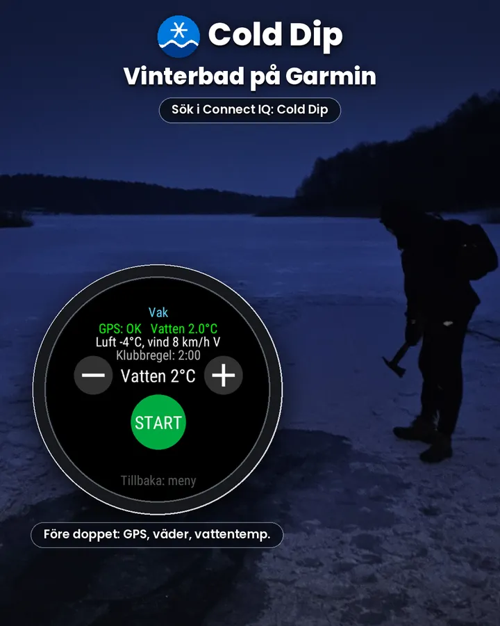
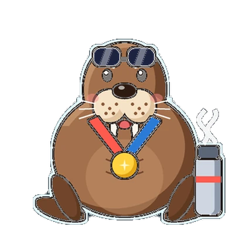
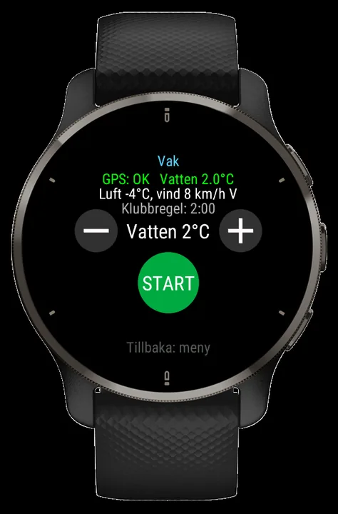
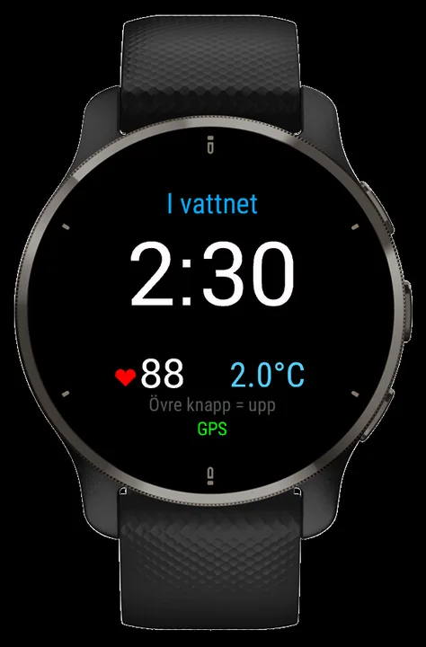
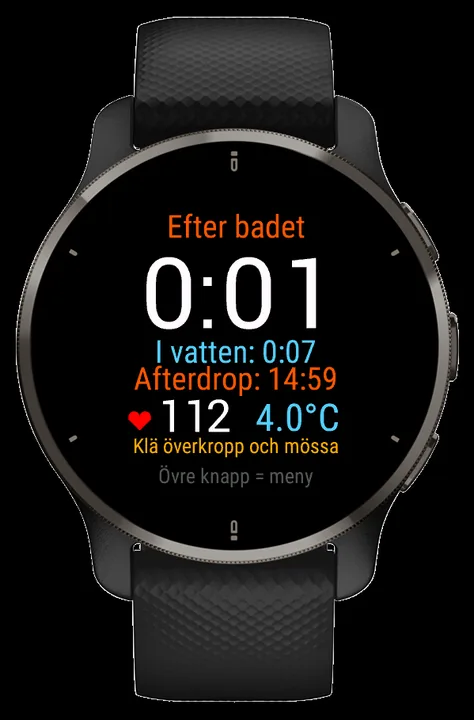

Före / i vattnet / efter
Övre knappen byter fas. Tiden i vattnet bara fortsätter räkna — appen säger aldrig åt dig att gå upp. Det bestämmer du. Föregående tid är bara en referens, inte ett mål du måste slå.
På klockan heter appen Vinterbad.
Vinterbad och kallbad sparade på riktigt — inte som simning.
5,0 i Connect IQ · 1000+ nedladdningar
Eller sök efter ”Cold Dip” i Connect IQ-appen i telefonen.



Plattformar
Appen kan laddas ner på Garmin-klockor idag. Amazfit-versionen (Zepp OS) är under granskning i Zepp App Store. Versioner för Huawei, Wear OS och Apple Watch är på väg.
Gjort för vinterbad, inte för bassäng. Du bestämmer hela tiden.
Övre knappen byter fas. Tiden i vattnet bara fortsätter räkna — appen säger aldrig åt dig att gå upp. Det bestämmer du. Föregående tid är bara en referens, inte ett mål du måste slå.
Pulsen spelas in hela tiden. Vattentemperaturen skriver du in manuellt och den sparas med aktiviteten.
Lufttemperatur, känns som och vind — från Garmin-vädret i din telefon.
Platsen för badet sparas och visas på en karta i Garmin Connect.
Efter varje bad en snabb bedömning av hur du mår. Dessutom pulstopp och återhämtning samt Body Battery och stress innan du gick i.
Allt sparas i Garmin Connect som en egen aktivitet, inte som simning.
Engelska, polska, tyska, tjeckiska, slovakiska, finska, norska, svenska, spanska, ryska och ukrainska. Appen följer automatiskt klockans språk.
Forerunner, Fenix, Epix, Enduro, Venu, Vivoactive, Instinct 2 / 3 / E / Crossover och fler. Stöds inte på mycket gamla klockor som Forerunner 920XT (Connect IQ 1.x).
Valfria tillägg i den kostnadsfria appen — du betalar bara om du vill ha dem
Appen du redan använder förblir gratis. Pro är för dem som vill ha mer av säsongen: nya sätt att träna, en tydligare bild av framstegen och en enklare skärm i vattnet.
4,99 USD engångsköp, plus moms där den tillkommer · 7 dagars gratis provperiod
Prova Pro gratis i 7 dagar — sedan 4,99 USD Uppdatera i Connect IQ
Bastu med klockan på handleden, kall dusch, guidad kontrast av bastu och vatten, eller en kort andningsförberedelse innan du går i. Du bekräftar alltid ett fasbyte med knappen.
Namngivna etapper och aviseringar vid de tider du väljer, utöver de gratis minut-, halvtid- och 3-2-1-larmen som är kvar som de är.
Total tid i vattnet och i bastun, fler rekord och historik på upp till 200 pass. Den kostnadsfria listan visar fortfarande de senaste 30.
Håll en svit på 7, 14 eller 30 dagar och tjäna märken för 10, 25, 50 och 100 pass, första doppet under 5°C, ett kontrastpass och bastu plus dopp i samma pass.
En stor timer, en sida för puls och rundor och teman (is, mörkt, hög kontrast, bastu). Byt sida med Upp och Ned.
En stor timer i vattnet, vattentemperatur och puls. En knapp för start och stopp. Inga extra menyer eller skärmar. Du slår på det i inställningarna när Pro är upplåst.
En föreslagen tid utifrån vattentemperaturen, enligt en vanlig klubbregel (ungefär lika många minuter som °C, mellan 0:30 och 5:00). Bara ett tips: appen avslutar aldrig passet och säger aldrig att en tid är säker.
På nyare klockor kan du fästa en glance och komplikationer: dagsstreak, tiden för senaste doppet och säsongsminuter. Glance är gratis där. Komplikationer kräver en urtavla som stöder appkomplikationer.
När du sparar ett dopp visar ett enkelt kort tid, temperatur, känsla och streak. Fotografera skärmen för att dela det. En historiklista stannar på klockan, och Garmin Connect får fortfarande FIT-aktiviteten. Ingen molnexport eller Instagram-bild — Connect IQ kan inte skicka foton själv.
Efter doppet ser du en enkel pulskurva, toppen och 1- och 2-minutersvärden för återhämtning. Bara ett tips, inte medicinskt råd.
Spara en dopplats med den senaste vattentemperaturen du registrerade där. När du är i närheten kan startskärmen visa det besöket. Det är inte en live-sjötemperatur — Connect IQ har inget sådant API.
Om du lämnar klockan utanför så att den inte blir för varm, slå på alternativet: appen förväntar sig inte puls från handleden i bastun och kan starta en uppvärmningsfas efteråt. Du kan också starta uppvärmning efter vattnet från menyn.
| Vad som ingår | Gratis | Pro ⭐ PRO |
|---|---|---|
| Allt som redan finns i Cold Dip 1.0.3 — fyra profiler, historik på 30, rekord, guidad andning, GPS och mer | ✓ Ja | ✓ Ja |
| Bastu, kontrast och nya lägen ⭐ PRO | — | ✓ Ja |
| Egna larm i vattnet ⭐ PRO | — | ✓ Ja |
| Se hela säsongen ⭐ PRO | — | ✓ Ja |
| Märken och dagliga sviter ⭐ PRO | — | ✓ Ja |
| Extra skärmar och färgteman ⭐ PRO | — | ✓ Ja |
| Enkelt läge, gjort för handskar ⭐ PRO | — | ✓ Ja |
| Ett tidstips — inte en gräns ⭐ PRO | — | ✓ Ja |
| Glance och urtavlekomplikationer (nyare klockor) | På nyare klockor | På nyare klockor |
| Passkort och historiklista ⭐ PRO | — | ✓ Ja |
| Puls- och återhämtningsgraf ⭐ PRO | — | ✓ Ja |
| Sparade platser med senaste vattentemperaturen ⭐ PRO | — | ✓ Ja |
| Klockan utanför bastun och uppvärmning ⭐ PRO | — | ✓ Ja |
| Pris | Gratis | 7 dagars provperiod, sedan 4,99 USD en gång |
Pro körs på nyare Garmin-klockor med Connect IQ 4 eller senare, bland annat Venu 2 / 3 / 4, Venu Sq 2, Venu X1, vívoactive 5 / 6, Forerunner 165 / 170 / 255 / 265 / 570 / 955 / 965 / 970, fēnix 7 / 8 / 9, epix (Gen 2), Instinct 3 AMOLED, Descent Mk3, Enduro 3 / 4, Approach S50 / S70 / S72 och MARQ (Gen 2) / (Gen 3). Den körs inte på äldre eller mer minnesknappa modeller som fēnix 5 / 6, den första Venu, vívoactive 3 / 4, Forerunner 55 / 245 / 645 / 945, Instinct 2, Instinct 3 Solar eller Instinct E — den kostnadsfria appen fungerar där fortfarande. Kontrollera din modell i listan.
I Garmin Connect sparas ett bastupass som träning eller meditation, eftersom Garmin inte har aktivitetstypen ”bastu”.
Tidstipset är inte ett medicinskt råd och betyder inte att ett pass är säkert. Kallt vatten och bastu innebär risker. Rådfråga en läkare, gå aldrig ensam och använd ditt eget omdöme. Du har kontrollen hela tiden.
Sök efter din modell. Listan omfattar de 133 klockorna i Cold Dip.
Mycket gamla klockor med Connect IQ 1.x, som Forerunner 920XT, kan inte stödjas. Pro behöver en nyare klocka — sök efter din modell för att kontrollera.
Urtavlor
Valrossurtavlor för isbad. Mors – tarcza ändras med vädret. Mors Level stiger med dina säsongsminuter. Dip Goals och Afterdrop kommer snart.


Animerad valross-urtavla för vinterbad
3,99 USD 24 timmars gratis provperiod
Kommer snart till Connect IQ Store Hämta den i Connect IQ Läs mer
Spelifierad valross-urtavla för vinterbad
2,99 USD 7 dagars gratis provperiod
Kommer snart till Connect IQ Store Hämta den i Connect IQ Läs mer

Målringar för veckans isbad, säsongsminuter och svit, plus vatten- och lufttemperatur, Body Battery och puls. Fyra teman.

En gratis Garmin-urtavla med stor tid och 3 fält. Den låses aldrig. Valfritt Afterdrop Pro låser upp Cold Dip-fält, lufttemperatur, soluppgång och solnedgång samt 4 extra teman.
Animerad valross-urtavla för vinterbad
Valrossen reagerar på vädret: vågor i fint väder, mössa i frost, skakar av snön och hoppar i isvaken när det är dags att vinterbada. Tid, datum, lufttemperatur, väder, puls, steg och batteri. Animeringen spelas när du väcker klockan — aldrig i always-on-läget.
3,99 USD engångsköp, plus moms där den tillkommer
På AMOLED-klockor rör sig valrossen när du lyfter handleden — aldrig i always-on-läget.
Färgrik animation på AMOLED-klockor som Venu 2, 2 Plus, 3 och 4, vívoactive 5 och 6, Forerunner 165, 170, 265, 570, 965 och 970, Fenix 8 och 9 (AMOLED), Epix 2, Descent Mk3, D2 Mach, Approach S70 och S72, Instinct 3 AMOLED och MARQ 2 och 3.
Den här urtavlan finns inte till MIP-klockor och modeller med mindre minne, till exempel Fenix 5 Plus, Fenix 6 och 7, Fenix Solar, Forerunner 245, 255, 745, 945 och 955, Enduro, Descent Mk2, vívoactive 4, Venu 1 och första generationens MARQ. Dessa skärmar kan inte visa den färgrika animeringen.
Spelifierad valross-urtavla för vinterbad
Din valross stiger genom 5 nivåer allt eftersom säsongens kallbadminuter växer — live från den kostnadsfria appen Cold Dip. På vintern ett rykande isvak, på sommaren en strand, märke för doppsvit, vattentemperatur, puls, batteri och en ren always-on-skärm. Väckningsanimeringen spelas när du väcker klockan — aldrig i always-on-läget.
2,99 USD engångsköp, plus moms där den tillkommer · 7 dagars gratis provperiod
För att stiga i nivå med live minuter, doppsvit och vattentemperatur, installera den kostnadsfria appen Cold Dip. Utan den visar de fälten helt enkelt klockans data.
NYBÖRJARE 1/5




5 nivåer
1/5
0–29 min den här säsongen
2/5
30–119 min den här säsongen
3/5
120–299 min den här säsongen
4/5
300–599 min den här säsongen
5/5
600+ min den här säsongen


Färganimering på 51 AMOLED-klockor som Venu 2, 2 Plus, 3 och 4, vívoactive 5 och 6, Forerunner 165, 170, 265, 570, 965 och 970, Fenix 8 och 9 (AMOLED), Epix 2, Descent Mk3, D2 Mach, Approach S70 och S72, Instinct 3 AMOLED och MARQ 2 och 3. Always-on använder mycket få tända pixlar.
En tydlig, statisk urtavla på 19 MIP-klockor som Fenix 7, Fenix 8 Solar, Forerunner 255 och 955 samt Enduro 3 och 4. Sammanlagt stöder Mors Level 70 Garmin-klockor, på 11 språk.
Snittbetyg 5,0 ★ i Connect IQ Store och över 1000 nedladdningar.
★★★★★
„Super, pierwsze morsowanie z apką za mną, działa! Tego mi było trzeba! Dzięki”
Super, mitt första vinterdopp med appen är gjort, den fungerar! Precis vad jag behövde! Tack (Översatt från polska)
★★★★★
„Rewelacyjna apka. Przetestowana podczas morsowania. Wszystko działa dobrze”
Fantastisk app. Testad vid vinterbad. Allt fungerar bra (Översatt från polska)
★★★★★
„Działa nawet na starszym Garminie za co duże brawa dla autora”
Fungerar till och med på en äldre Garmin — stora applåder till skaparen (Översatt från polska)
★★★★★
„Świetna sprawa!💙”
Toppen!💙 (Översatt från polska)
Ett dopp från start till sparat — riktiga skärmar från Garmin-simulatorn.



De senaste versionerna av Cold Dip.
Vattentemperaturen du anger efter doppet gäller nu bara för det passet. Frågan ignorerar en oavsiktlig knapptryckning direkt efter att du gått upp. Stabilare: fullt minne eller ett sparfel fryser inte längre appen, och ett fält eller en sport som inte stöds på en äldre klocka stoppar inte längre starten. Rättade polska och ryska uppvärmningstips.
Ett krasch ca 20 s efter sparat pass är åtgärdat (rapporterat på Venu 3S). Efter doppet frågar klockan efter vattentemperaturen; gratis och kan stängas av i inställningarna.
Cold Dip Pro är här. Allt från 1.0.3 förblir gratis. Pro är valfritt: 4,99 USD en gång, med 7 dagars gratis provperiod. Nya lägen: bastu, kall dusch, guidat kontrastbad och andningsförberedelse; egna larm och namngivna etapper i vattnet; säsongsstatistik, märken och dagssviter (7 / 14 / 30); extra skärmar, färgteman och enkelt läge.
133 klockor, inklusive Instinct 2, Instinct 2S, Instinct 2X, Instinct 3 Solar, Instinct E och Instinct Crossover, plus en ny svartvit layout för MIP-skärmar.
126 klockor, inklusive Forerunner 55.
105 klockor, inklusive rektangulära layouter för Venu X1 och Venu Sq 2.
Första utgåvan.
“Działa idealnie” (Fungerar perfekt)
Över 10 minuter vid 5°C — vattentemperatur på klockan, och all data sparad i Garmin Connect.
Några saker folk ofta frågar om efter installationen.
Installera den från Connect IQ Store-appen i telefonen — inte från Google Play eller App Store. På klockan hittar du Cold Dip (Vinterbad) i listan över aktiviteter / appar.
I profilen ”Vak” ställer du in den med knapparna − / + på startskärmen. I andra profiler görs det via menyn: ”Vattentemp. manuellt”. Om du ser ”--°C” i vattnet har temperaturen inte ställts in ännu.
Öppna aktiviteten, gå till fliken ”Statistik” och scrolla ner till avsnittet ”Connect IQ”. Där finns puls, vattentemperatur, väder, känsla och tiderna för varje fas. Rutorna på skärmen ”Översikt” sätts av Garmin — appen kan inte ändra dem.
Nej. Klockan kan inte mäta kroppstemperatur. Sensorn visar klockans egen temperatur, som påverkas av huden och luften. I Cold Dip skriver du in vattentemperaturen manuellt.
Kalorierna uppskattas av klockan utifrån pulsen, de räknas inte av Cold Dip.
Ja. Inspelningen sker i klockan, så telefonen kan ligga kvar i väskan. Utan telefon missar du bara vädret, eftersom det kommer från Garmins väder i telefonen. Aktiviteten synkas till Garmin Connect nästa gång klockan ansluter till telefonen. Telefonen behövs för att installera appen och låsa upp Pro.
Klockan kan inte mäta vattentemperaturen själv — sensorn mäter klockan, som värms av huden och luften. I Cold Dip ställer du in vattentemperaturen med − / + (eller i menyn), och när du gått upp frågar appen efter den. Har du en parkopplad Garmin Tempe-sensor använder appen dess värde. Klocksensorn och lufttemperaturen visas aldrig som vattentemperatur.
Pro är valfritt och appen förblir gratis. Pro ger bastu, kall dusch, guidad kontrast och andningsförberedelse, egna larm, säsongsstatistik, märken och dagliga sviter, extra skärmar och teman, ett enkelt läge som funkar med handskar, en tidsledtråd efter vattentemperatur (en ledtråd, aldrig en gräns) och en pulsgraf. Engångspris 4,99 USD efter 7 dagars gratis provperiod. Se alla Pro-funktioner.
Betalningen sker via KiezelPay. När du vill behålla Pro visar klockan en 6-siffrig kod. Ange den på kzl.io/cold-dip-pro (för betalda urtavlor: kzl.io/code) och betala en gång. Ha telefonen nära med Garmin Connect och Bluetooth på — klockan låses upp via den anslutningen, oftast inom 5 minuter.
Över 130 Garmin-klockor med Connect IQ: Forerunner, fēnix, epix, Enduro, Venu, vívoactive, Instinct 2 / 3 / E / Crossover med flera. Pro kräver Connect IQ 4 eller nyare. Mycket gamla modeller som Forerunner 920XT stöds inte. Kolla din modell.
En version för Amazfit (Zepp OS) är klar och väntar på granskning i Zepp App Store. Versioner för Huawei, Wear OS (Samsung Galaxy Watch, Pixel Watch) och Apple Watch är på gång — inga datum än. Få besked.
Kallt vatten är allvar. Det här är allmänna säkerhetspåminnelser, inte medicinska råd. Du bestämmer när du går i och när du går upp.
Gå alltid tillsammans med någon som kan hjälpa om något händer, eller se till att någon på land håller koll på dig.
Om du är ny i kallt vatten, vänj dig successivt i stället för att börja med ett långt bad i mycket kallt vatten.
Många börjar med bara kort tid i vattnet och ökar långsamt. Det finns ingen tid du “bör” hålla ut.
Lämna vattnet så snart du känner att du bör — kraftiga frossa, smärta, domningar, förvirring, eller bara en känsla av att det räcker. Cold Dip säger aldrig åt dig att gå upp, och sätter aldrig en måltid. Din senaste tid är bara en referens.
Torka dig och värm upp så snart du kan efter att du gått upp. Ha varma kläder redo innan du går i.
När du har gått upp kan kroppstemperaturen i kärnan fortsätta sjunka en stund när kallare blod kommer tillbaka från hud och armar och ben. Det kallas ofta afterdrop. Fortsätt värma upp, ta det lugnt och vänta tills du mår bra innan du kör eller cyklar.
Cold Dip är en registreringsapp, inte en medicinteknisk produkt, och ger inte medicinska råd. Den kan inte säga om det är säkert för dig att gå i kallt vatten. Har du ett hälsotillstånd, är du gravid, eller är du osäker, tala först med en kvalificerad yrkesperson.
Korta, praktiska texter från en vinterbadare. Allmänna tips, inte medicinska råd.
En populär klubbtumregel efter vattentemperatur — och varför den inte är en säker gräns.
Varför du kan bli kallare efter att du gått upp, och hur du värmer dig lugnt.
De första doppen steg för steg: sällskap, korta tider, varma kläder redo.
En kort titt på ett bad, från startskärmen till sparandet i Garmin Connect.
Cold Dip kommer till fler klockor. Välj din: e-postappen öppnas med färdigt ämne, du trycker bara på skicka. Jag svarar en gång när den versionen är klar.
Inget nyhetsbrev och ingen spårning — bara ett mejl från mig. · lukasz.pszenny@gmail.com
Driver du en vinterbadgrupp, klubb eller sida? Dela gärna Cold Dip med medlemmarna. Appen är gratis och bilderna och texten nedan är klara att publicera.
Har du en idé till en Garmin-app eller en urtavla? Då gör vi den tillsammans. Skriv till mig och berätta vilken klocka du använder.
Om du redan använder Cold Dip hjälper ett omdöme i Connect IQ mycket — tack!
Cold Dip är gratis. Om den hjälper dina bad kan du stötta arbetet bakom den.
Bjud på en kaffe